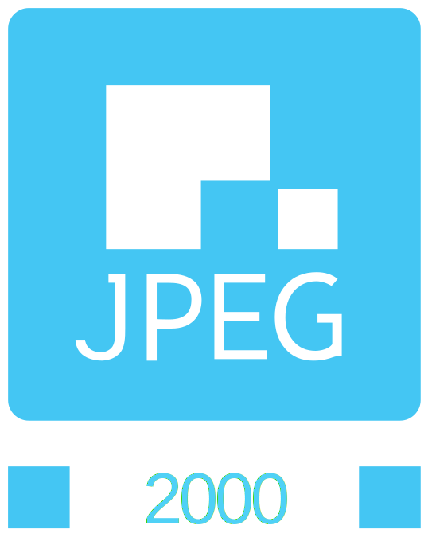
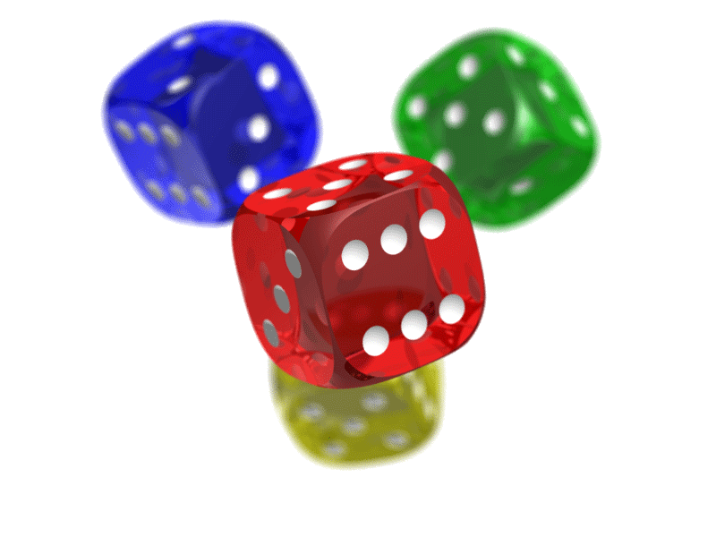
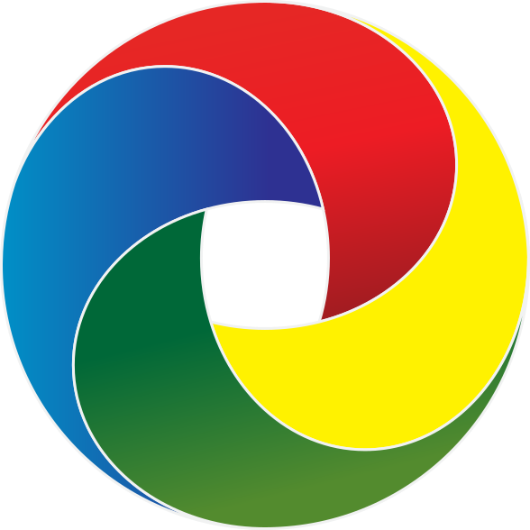
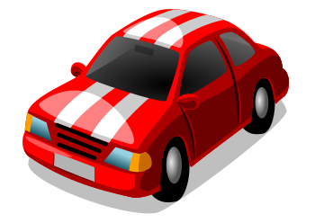
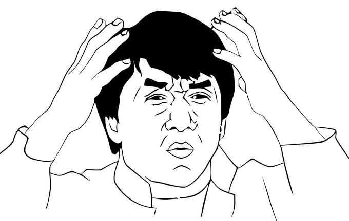
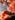
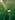
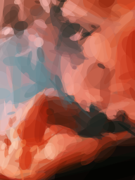
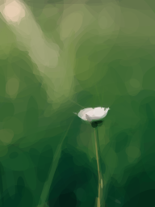
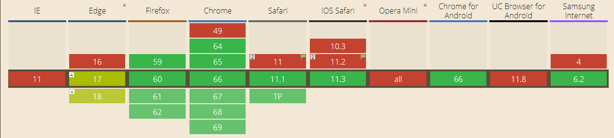

Показываем картинки пользователю: подробное руководство
Никита Дубко, D7
Никита Дубко
- Software Engineer в iTechArt, D7;
- адепт философии Pure CSS Images;
- соорганизатор митапов MinskCSS и MinskJS.

53% вероятность, что пользователь покинет страницу, если мобильный сайт загружается дольше, чем
3 секунды

Среднее время загрузки мобильной страницы на соединении
3G:
19 секунд
Lighthouse

Путь изображения
- Сохранение на сервере
- Отправка на клиент по запросу
- Декодирование и отображение в браузере
- «Сохранить как...»
Сохранение
на сервере

Форматы изображений
- BMP, TIFF, TGA, ICO
- JPEG, JPEG 2000, JPEG XR
- PNG, APNG
- GIF
- WebP
- SVG
- FLIF, BPG, HEIF
Растровая графика
JPEG
Joint Photographic Experts Group
jpeg.org

R
G
B


Y
яркость
V (Cb)
хроматический синий
U (Cr)
хроматический красный
Конвейер JPEG
- Преобразование RGB в YUV
- Разбиение матриц YUV на матрицы 8x8
- –î–∏—Å–∫—Ä–µ—Ç–Ω–æ–µ –∫–æ—Å–∏–Ω—É—Å–æ–∏–¥–∞–ª—å–Ω–æ–µ –ø—Ä–µ–æ–±—Ä–∞–∑–æ–≤–∞–Ω–∏–µ ü§ì
- Квантование (сжатие)

- Зигзаг-сканирование
- RLE-свертывание (AAABBBCCC -> 3A3B3C)
- Сжатие по Хаффману
Baseline JPEG

Progressive JPEG

Особенности progressive JPEG
- Изображение сразу видно целиком
- Меньше по размеру (в среднем)
- Не всегда понятно, когда загрузилось до конца
- Сильнее нагружает CPU из-за нескольких этапов декодирования
Используют прогрессивный JPEG
- Twitter
- Facebook
- Pinterest
- Yelp
Субдискретизация (chroma subsampling)
4:4:4 (1x1) Без субдискретизации

4:2:2 (2x1) Горизонтальная

Субдискретизация (chroma subsampling)
4:4:4 (1x1) Без субдискретизации
4:2:0 (2x2) Горизонтальная и вертикальная

Размер: 225x300
q=70; 1x1; 13 КБ
 q=70; 2x1; 11 КБ
q=70; 2x2; 9 КБ
q=70; 2x1; 11 КБ
q=70; 2x2; 9 КБ
Измерение искажений
npm install --save-dev gulp-imagemin
const gulp = require('gulp');
const imagemin = require('gulp-imagemin');
gulp.task('images', () =>
gulp.src('images/*.jpg')
.pipe(imagemin([
imagemin.jpegtran({ progressive: true }),
]))
.pipe(gulp.dest('dist'))
);
npm install --save-dev imagemin-guetzli
const gulp = require('gulp');
const imagemin = require('gulp-imagemin');
const imageminGuetzli = require('imagemin-guetzli');
gulp.task('guetzli', () =>
gulp.src('src/*.jpg')
.pipe(imagemin([ imageminGuetzli({ quality: 85 }) ]))
.pipe(gulp.dest('dist'))
);
npm install --save-dev imagemin-mozjpeg
const gulp = require('gulp');
const imagemin = require('gulp-imagemin');
const imageminMozjpeg = require('imagemin-mozjpeg');
gulp.task('mozjpeg', () =>
gulp.src('src/*.jpg')
.pipe(imagemin([
imageminMozjpeg({
progressive: true,
quality: 85,
sample: ['2x1']
})
]))
.pipe(gulp.dest('dist'))
);
Как выбрать?
| Guetzli |
MozJPEG |
- для статических сайтов;
- важно качество;
- не жалко оперативной памяти.
|
- для динамических сайтов;
- важна скорость;
- контроль над настройками.
|
Лайфхак 1: Размытие
Размер: 1200x925

q=100; 759 КБ
Лайфхак 2: Комбинация сжатий
gulp.task('jpegcombo', () =>
gulp.src('src/*.jpg')
.pipe(imagemin([ imageminGuetzli({ quality: 95 }) ]))
.pipe(imagemin([
imageminMozjpeg({
progressive: true,
quality: 85,
})
]))
.pipe(gulp.dest('dist'))
);
 Source (1350x900); 1126 КБ
Source (1350x900); 1126 КБ
 Guetzli q=95; 434 КБ
Guetzli q=95; 434 КБ
 + MozJPEG q=85; 209 КБ
+ MozJPEG q=85 2x2; 188 КБ
+ MozJPEG q=85; 209 КБ
+ MozJPEG q=85 2x2; 188 КБ
Лайфхак 3: EXIF
const shell = require('gulp-shell');
gulp.task('exif', () =>
gulp.src('dist/*.jpg', { read: false })
.pipe(shell([
'exiftool -P -overwrite_original -all= <%=file.path%>'
]))
);


brew install ImageMagick
...
convert image.jpg -quality 0 image.jp2
convert image.jpg image.jxr
*.jp2 — JPEG2000
*.jxr — JPEG-XR
GIF
Graphics Interchange Format

Особенности GIF
- 256-цветовая палитра;
- 1 цвет палитры можно объявить прозрачным;
- сжатие без потерь (LZW);
- поддержка анимации.
MP4; 415 КБ
GIF; 1.3 MБ
GIF -> MP4
ffmpeg \
-i animated.gif \
-movflags faststart \
-pix_fmt yuv420p \
-vf “scale=trunc(iw/2)*2:trunc(ih/2)*2” \
video.mp4
ffmpeg.org
GIF -> WebM
ffmpeg -i input.gif -c vp9 -b:v 0 -crf 41 output.webm
<img src="kitty.gif" width="400" height="300">
⬇️
<video width="400" height="300"
autoplay loop muted playsinline>
<source src="kitty.webm" type="video/webm">
<source src="kitty.mp4" type="video/mp4">
<img src="kitty.gif" width="400" height="300">
</video>
npm install --save-dev imagemin-gifsicle
const gulp = require('gulp');
const imagemin = require('gulp-imagemin');
const imageminGifsicle = require('imagemin-gifsicle');
gulp.task('gifsicle', () =>
gulp.src('src/*.gif')
.pipe(imagemin([ imageminGifsicle() ]))
.pipe(gulp.dest('dist'))
);
PNG
Portable Network Graphics
«PNG is Not GIF»
libpng.org

Особенности PNG
- спроектирован для замены GIF и TIFF;
- максимальное количество цветов — 248;
- поддержка альфа-канала;
- возможность гамма-коррекции и цветовой коррекции (ICC);
- сжатие без потерь (Deflate);
- возможность расширения формата (APNG).


tinypng.com

npm install --save-dev imagemin-pngquant
const gulp = require('gulp');
const imagemin = require('gulp-imagemin');
const imageminPngquant = require('imagemin-pngquant');
gulp.task('pngquant', () =>
gulp.src('src/*.png')
.pipe(imagemin([ imageminPngquant({ quality: 85 }) ]))
.pipe(gulp.dest('dist'))
);
Особенности WebP
- разрабатывается Google;
- основан на алгоритмах видеокодеков VP8 и VP9;
- поддерживает альфа-канал (прозрачность);
- требует больше ресурсов для декодирования;
- 21 апреля 2018 вышла версия 1.0.0.
Используют WebP
- Google
- Netflix
- Amazon
- Ebay
- Yahoo
npm install --save-dev imagemin-webp
const imageminWebp = require('imagemin-webp');
gulp.task('webp', () =>
gulp.src('src/*.{jpg,png}')
.pipe(imagemin([
imageminWebp({
quality: 85,
preset: 'photo'
})]))
.pipe(gulp.dest('dist'))
);
JPG; q=100; 71 КБ
WebP; q=100; 36 КБ
JPG; q=70; 24 КБ
WebP; q=70; 7 КБ
gif2webp -mixed kitty.gif -o kitty.webp
GIF; 1.3 MБ
WebP; 582 КБ
Векторная графика
Особенности SVG
- векторная графика;
- подмножество XML;
- совместим с CSS;
- открытый стандарт;
- позволяет встраивание растровой графики.
<svg id="circle" height="200" xmlns="http://www.w3.org/2000/svg">
<circle id="greencircle" cx="50" cy="50" r="50" fill="green" />
</svg>


PNG; 37 КБ
SVG; 5 КБ
npm install --save-dev imagemin-svgo
const imageminSvgo = require('imagemin-svgo');
gulp.task('svgo', () =>
gulp.src('src/*.svg')
.pipe(imagemin([
imageminSvgo({
convertColors: true,
})]))
.pipe(gulp.dest('dist'))
);


Source; 27 КБ
Minified; 12 КБ
sprite.svg
<svg xmlns="http://www.w3.org/2000/svg"
xmlns:xlink="http://www.w3.org/1999/xlink">
<symbol viewBox="0 0 100 100" id="greencircle">
<circle cx="50" cy="50" r="50" fill="green" />
</symbol>
<symbol viewBox="0 0 100 100" id="redsquare">
<rect x="0" y="0" width="100" height="100" fill="red" />
</symbol>
</svg>
index.html
<html>
<body>
<svg class="icon icon--circle" width="100">
<use xlink:href="sprite.svg#greencircle" />
</svg>
<svg class="icon icon--square" width="100">
<use xlink:href="sprite.svg#redsquare" />
</svg>
</body>
</html>
npm install --save-dev gulp-svg-sprite
const svgSprite = require('gulp-svg-sprite');
gulp.task('svgSprite', () =>
gulp.src('src/icons/*.svg')
.pipe(svgSprite({
mode: {
symbol: { sprite: "../sprite.svg" }
}
}))
.pipe(gulp.dest('dist'))
);
Советы
- храните исходные изображения в PNG или TIFF;
- выбирайте правильный формат в зависимости от изображения;
- автоматизируйте сохранение в разных форматах;
- подберите подходящие параметры сжатия.
Отправка клиенту
по запросу


JPG; 25 КБ

Server-side content-type negotiation
GET /some.jpg HTTP/1.1
Host: ...
Connection: keep-alive
User-Agent: ...
Accept: image/webp,image/apng,image/*,*/*;q=0.8
Accept-Encoding: gzip, deflate, br
Accept-Language: en-US,en;q=0.9,ru-RU;q=0.8,ru;q=0.7
igrigorik/webp-detect
<IfModule mod_rewrite.c>
RewriteEngine On
RewriteCond %{HTTP_ACCEPT} image/webp
RewriteCond %{DOCUMENT_ROOT}/$1.webp -f
RewriteRule (.+)\.(jpe?g|png)$ $1.webp [T=image/webp,E=accept:1]
</IfModule>
<IfModule mod_headers.c>
Header append Vary Accept env=REDIRECT_accept
</IfModule>
AddType image/webp .webp
HTTP Cache
ETag: W/"3b952-1635db68e52"Cache-Control: public, max-age=31536000
localStorage
- можно хранить только строки;
- общий размер — до 5 МБ.
IndexedDB
- можно хранить файлы в виде Blob;
- размер ограничен доступной памятью у пользователя.
Service Workers
if ('serviceWorker' in navigator) {
const sw = navigator.serviceWorker;
sw.register('sw.js')
.then(() => sw.ready.then((worker) => {
worker.sync.register({
minRequiredNetwork: 'network-online'
});
}));
}
importScripts('https://storage.googleapis.com/.../workbox-sw.js');
workbox.routing.registerRoute(
/\.(?:png|gif|jpg|jpeg|svg)$/,
workbox.strategies.cacheFirst({
cacheName: 'images',
plugins: [
new workbox.expiration.Plugin({
maxEntries: 60,
maxAgeSeconds: 30 * 24 * 60 * 60, // 30 Days
}),
],
}),
);
Network Type
let isSlow = true;
const connection = navigator.connection;
if (connection) {
// 'slow-2g', '2g', '3g' или '4g'
if (connection.effectiveType !== 'slow-2g') {
isSlow = false;
}
}
Декодирование и отображение в браузере
 1800x1200
1800x1200

Отображение
- декодирование;
- изменение размеров;
- отрисовка.
Не заставляйте браузер обрабатывать лишние пиксели!
2008
<img src="img.jpg" alt="Hello, iTechArt!" width="20" height="18" />
2018
<picture>
<source type="image/webp" media="(min-width: 1150px)"
srcset="img-desktop@1x.webp 1x, img-desktop@2x.webp 2x">
<source type="image/webp"
srcset="img-mobile@1x.webp 1x, img-mobile@2x.webp 2x">
<source media="(min-width: 1150px)"
srcset="img-desktop@1x.jpg 1x, img-desktop@2x.jpg 2x">
<img src="img-mobile@1x.jpg" srcset="img-mobile@2x.jpg 2x"
alt="Hello, iTechArt!" width="20" height="18">
</picture>
<picture>
<source type="image/webp" media="(min-width: 1150px)"
srcset="img-desktop@1x.webp 1x, img-desktop@2x.webp 2x">
<source type="image/webp"
srcset="img-mobile@1x.webp 1x, img-mobile@2x.webp 2x">
<source media="(min-width: 1150px)"
srcset="img-desktop@1x.jpg 1x, img-desktop@2x.jpg 2x">
<img src="img-mobile@1x.jpg" srcset="img-mobile@2x.jpg 2x"
alt="Hello, iTechArt!" width="20" height="18">
</picture>
<img srcset="img-320w.jpg 320w,
img-480w.jpg 480w,
img-800w.jpg 800w"
sizes="(max-width: 320px) 280px,
(max-width: 480px) 440px,
800px"
src="img-800w.jpg" alt="Hello, iTechArt!">
srcset — задаем каждому размеру свое изображение;sizes — вычисляем размер, который нужно применить;- выбираем из
srcset самое подходящее по размеру изображение.
2008
.itechart {
background-image: url('img/itechart.jpg');
}
2018
.itechart {
background-image: url('img/itechart-mobile.jpg');
}
@media (min-width: 1050px) {
.itechart {
background-image: url('img/itechart-desktop.jpg');
}
}
2dppx
 3dppx
3dppx
 4dppx
4dppx
.itechart {
background-image: url('img/itechart@1x.jpg');
}
@media (-webkit-min-device-pixel-ratio: 2),
(min-resolution: 192dpi),
(min-resolution: 2dppx) {
.itechart {
background-image: url('img/itechart@2x.jpg');
}
}
.itechart {
background-image: image-set(url('itechart@1x.jpg') 1x,
url('itechart@2x.jpg') 2x);
}
npm install --global imaging-heap
imagingheap https://www.itechart.by/
<img src="/media/images/itechart-7.original.jpg">
╔══════════╤══════════╤════════╤════════════╤════════╤════════════╗
║ │ Image │ @1x │ @1x │ @2x │ @2x ║
║ │ Width in │ Image │ Percentage │ Image │ Percentage ║
║ Viewport │ Layout │ Width │ Match │ Width │ Match ║
╟──────────┼──────────┼────────┼────────────┼────────┼────────────╢
║ 320px │ 1116px │ 1920px │ 172.0% │ 1920px │ 86.0% ║
║ 480px │ 1116px │ 1920px │ 172.0% │ 1920px │ 86.0% ║
║ 640px │ 1116px │ 1920px │ 172.0% │ 1920px │ 86.0% ║
║ 800px │ 1116px │ 1920px │ 172.0% │ 1920px │ 86.0% ║
║ 960px │ 1116px │ 1920px │ 172.0% │ 1920px │ 86.0% ║
║ 1120px │ 1120px │ 1920px │ 171.4% │ 1920px │ 85.7% ║
║ 1280px │ 1280px │ 1920px │ 150.0% │ 1920px │ 75.0% ║
╚══════════╧══════════╧════════╧════════════╧════════╧════════════╝
Legend: @1x <100% >150% Above @1x <75% 75%–92%
<img src="placeholder.jpg"
data-src="image.jpg" />
const observer = new IntersectionObserver(handler, {
rootMargin: '0px',
threshold: 0.1,
});
const images = document.querySelectorAll('img[data-src]');
images.forEach(img => {
observer.observe(img);
});
function handler(entries, observer) {
entries.forEach(entry => {
if (entry.isIntersecting) {
loadImage(entry.target);
observer.unobserve(entry.target);
}
});
}
function loadImage(image) {
const src = image.dataset.src;
fetchImage(src).then(() => { image.src = src; });
}
function fetchImage(url) {
return new Promise((resolve, reject) => {
const image = new Image();
image.src = url;
image.onload = resolve;
image.onerror = reject;
});
}
Placeholder — техники
Low Quality Image Placeholders (LQIP)

2.9 КБ

2.8 КБ
 2.9 КБ
2.9 КБ
SVG-Based Image Placeholder (SQIP)
npm install -g sqip
sqip -o sqip.svg -n 8 image.jpg
Primitive (ellipses)

38 КБ

38 КБ
 38 КБ
38 КБ
Предзагрузка
<link rel="preload" as="image" href="important.png">

Доступность
- для информативных изображений — краткая информация в
alt;
- для декоративных изображений:
alt="";role="presentation";aria-hidden="true".
Защита от роботов #1
robots.txt
User-agent: Googlebot-Image
Disallow: /images/secret.jpg
Защита от роботов #2
HTTP Headers
<IfModule mod_headers.c>
<FilesMatch "images/*\.jpg$">
Header append X-Robots-Tag "noindex"
</FilesMatch>
</IfModule>
PNG -> JPEG + SVG-маска
<svg width="300" height="300" viewBox="0 0 300 300">
<defs>
<clipPath id="octocat">
<path fill="#000000" d="..."/>
</clipPath>
</defs>
<image clip-path="url(#octocat)"
width="300" height="300"
xlink:href="dojocat.jpg" />
</svg>

399 КБ
.uncontrasted {
filter: contrast(1.15);
}
Советы
- Выбирайте правильный формат хранения ваших изображений.
- Автоматизируйте сжатие.
- Не отправляйте на клиент то, что можно не отправлять.
- Адаптируйте и ретинизируйте картинки.
- Тестируйте сайты на медленном соединении.
- Думайте про UX, а не только про DX.